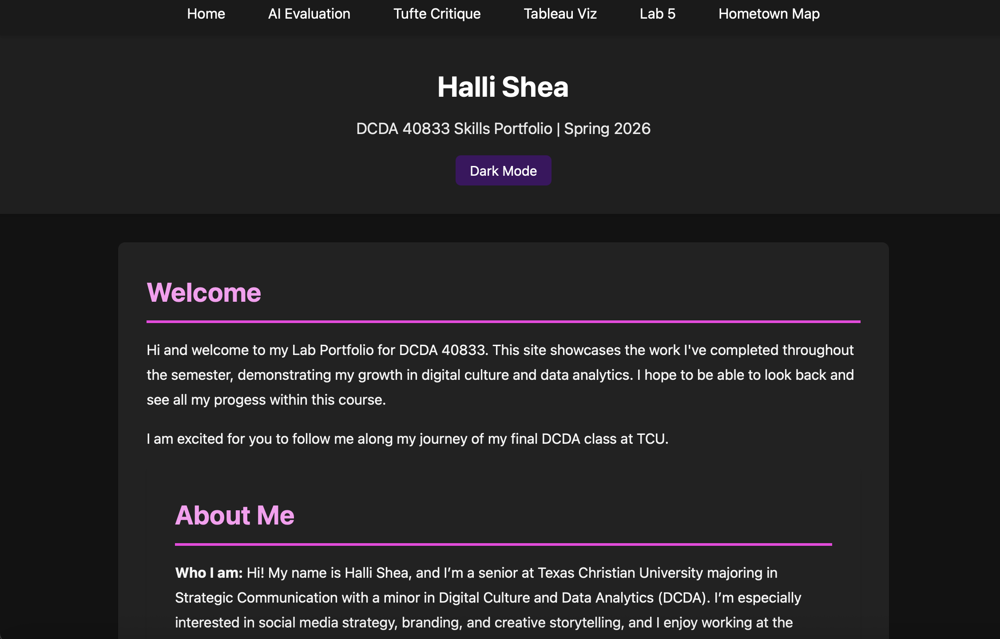

Technical Understanding
Dark Mode Feature
The dark mode works by using JavaScript to toggle a class called
dark-mode on the body element. When that class is added,
the CSS styles change the background and text colors. The
classList.toggle() method turns the class on and off
when the button is clicked. LocalStorage is used so the theme
preference stays saved after the page refreshes.
Python Visualization
The visualization uses matplotlib to create a bar chart from a
small dataset defined directly in the notebook. I understood how
the lists store the age groups and their values, and how
plt.bar() generates the chart. I modified the AI-generated
output by changing the title and adjusting the data values.
My AI Usage Guidelines
- I will not submit AI-generated code that I do not understand.
- I will test and modify AI output instead of copying it exactly as given.
- I will treat AI as a collaborator, not a replacement for learning.
- I will document my prompts and clearly state when AI was used.
- I will make sure I can explain any code I submit to a peer.
Experiment A – Dark Mode Toggle
For this experiment, I used AI assistance (Codex) to generate a dark mode toggle feature for my portfolio site. The AI provided starter HTML, CSS, and JavaScript code. I implemented the feature step-by-step and tested it to ensure it worked properly.
Screenshot of Working Feature
Experiment B – Beginner Data Visualization
For this experiment, I used AI to generate beginner-friendly Python code in Google Colab to create a bar chart visualization using matplotlib. I modified the generated output by adjusting the chart title and editing the dataset values.
Screenshot of Visualization